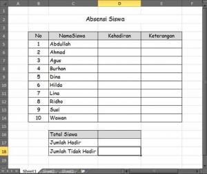
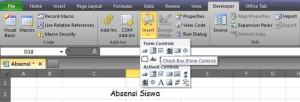
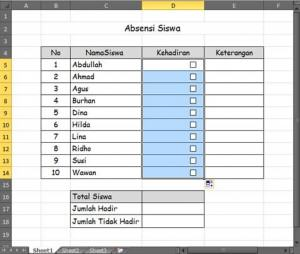
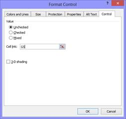
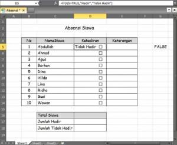
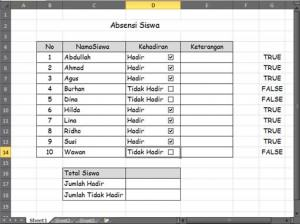
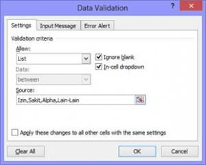
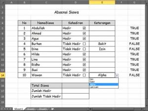
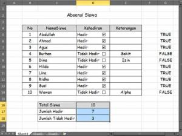

Absensi siswa
Rekap kehadiran memakai COUNTIF untuk menghitung jumlah hadir, sakit, izin, dan alpa tiap siswa.
Coba langsung di browserLembar kerja mini, kuis, dan tanda selesai.
Buka versi interaktifLangkah praktik
- Isi kolom tanggal dengan kode: H (hadir), S (sakit), I (izin), A (alpa).
- Hitung hadir dengan =COUNTIF(B2:AF2;"H").
- Ulangi untuk S, I, dan A.
- Persentase kehadiran: =hadir/COUNTA(B2:AF2).
- Tambahkan Data Validation bagian List agar kode hanya H, S, I, atau A.
Tangkapan layar praktik
9 gambar langkah demi langkah. Klik gambar untuk membuka ukuran penuh.








